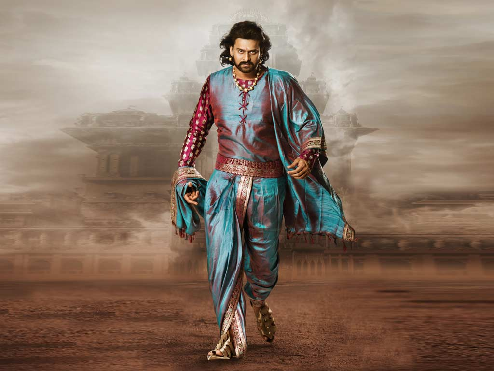

Bahubali
Bahubali, a much revered figure among Jains, was the son of Rishabhanatha (the first tirthankara of Jainism) and
the brother of Bharata Chakravartin. He is said to have meditated motionless for a year in a standing posture (kayotsarga) and
that during this time, climbing plants grew around his legs.
